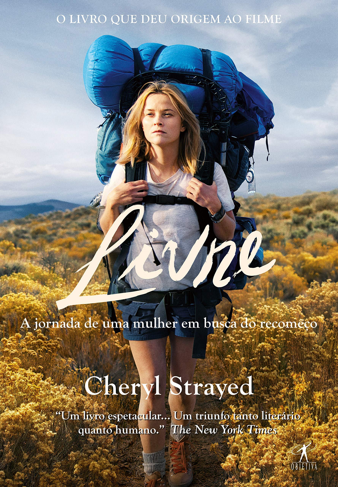

5 livros desconhecidos que podem impressionar
Voltar
Se você conhece o mundo dos livros, provavelmente já se deparou com grandes obras, muitas vezes best-sellers, das quais tenha lido e estas não as tenha lhe impressionado tanto quanto você acharia: O famoso "hype" - tanto marketing e popularidade em cima de algo, fazendo com que esse torne-se supervalorizado. Também, provavelmente houveram momentos em que você leu um livro ou assistiu algo desconhecido e pouco popular, do qual acabou superando suas expectativas, o popular "era muito melhor do que eu esperava". Então, resolvi trazer-lhe 5 obras pouco conhecidas que foram exemplos de minhas leituras, das quais superaram minhas expectativas: Histórias talvez até desconhecidas, com pouca divulgação, que são excelentes, ricas em detalhes e de belíssima qualidade.
Gente Ansiosa
Fredrik Backman

Um assalto a banco mal sucedido, onde a fuga do assaltante de banco termina dentro de um apartamento à venda, no meio de uma visita imobiliária de vários potenciais compradores. Enquanto a polícia cerca o prédio e fica cada vez mais perto da captura, o assaltante de banco se vê em uma situação bizarra, com pessoas estranhas, que são feitas reféns. De uma forma ilária e irreverente, através de uma belíssima escrita, a situação desencadeia vários laços entre os envolvidos e torna a obra extremamente interessante. A qualidade da obra deu origem à série disponível na Netflix.
Leia um trechoEu Sou o Mensageiro
Markus Zusak

A vida de um simples taxista vira do avesso quando esse se vê deparado a um assalto a banco, no qual consegue impedi-lo, tornando-se um heroi. Após o ocorrido, Ed, o taxista, começa a receber várias cartas postais anônimas, com endereços e conteúdo desconhecidos, no qual o personagem decide visitar, acabando em situações complicadas diversas. Ed poderá escolher: Agir, salvando os envolvidos, ou simplesmente ignorar. De escrita riquíssima e imersiva, Markus Zusak alterna entre mistério e cotidiano.
Leia um trechoLivre
Cheryl Strayed
Baseado na história real da autora, Cheryl descreve sua jornada de 1770 km ao longo da Pacific Crest Trail. Com a vida em pedaços, ocasionada por perdas e insucessos, Cheryl Strayed decide atravessar caminhando a PCT sozinha, até a Ponte dos Deuses, em busca de um sentido e inspiração para seguir vivendo. Ao longo de sua desafiadora jornada, Cheryl terá de enfrentar os perigos da trilha, o clima extremo e, o pior de tudo, seus próprios fantasmas, colocando assim um ponto final à sua vida de até então. Uma obra incrível, que mostrará, na prática, a verdadeira força de uma mulher. A qualidade da obra deu origem ao filme.
Leia um trechoO Segundo Suspiro
Philippe Pozzo di Borgo

Baseado na vida do próprio autor, Philippe, grande executivo, sofre um grave acidente e torna-se tetraplégico. Após o ocorrido, Philippe começa a perceber que as pessoas ao seu redor estão ao seu lado por causa de seu status, não por amor verdadeiro. Com sua vida à beira do abismo, Philippe tenta contratar um acompanhante, quando encontra Abdel, que tenta a vaga a fim de consertar os problemas de sua vida pessoal. Ambos tornam-se grandes amigos e começam a viver a vida sem moderações. O que torna essa obra especial é o fato de que ambos vivem a vida no 'f#da-se', sem uma mensagem inspiradora de superação ou algo do tipo: São apenas duas pessoas comuns que se tornam parceiros e começam a curtir a vida através da amizade, apreciando os momentos sem medos, vergonhas ou receios. A qualidade da obra deu origem ao filme 'Intocáveis'.
Leia um trechoUma Longa Queda
Nick Hornby

4 pessoas sem nada em comum, a não ser a vontade de colocar um ponto-final em suas vidas, se encontram, por acaso, no alto de um prédio em Londres, na noite de Ano-Novo. Tomados pelo impulso solidário de não permitir que os outros se atirem, ambos criam um acordo de adiar a decisão de pular, para manterem-se vivos até o Dia dos Namorados. Uma comédia dramática ilária extremamente irônica, que descreve situações diversas entre os personagens, onde ambos buscam, no outro, a resolução de seus problemas, motivo dos quais levaram cada um ao topo do prédio. A qualidade da obra deu origem ao filme.
Leia um trecho
Mateus Schwede
Sou autor e idealizador do UB Social, onde divulgo conteúdo prático e artigos sobre TI, com foco em tecnologia livre e inteligência artificial. Já li inúmeros livros, principalmente romances, e decidi escrever essa dica para você que procura ler algo alternativo e de boa qualidade.